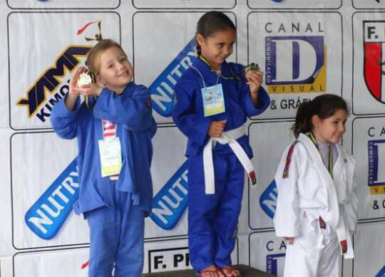
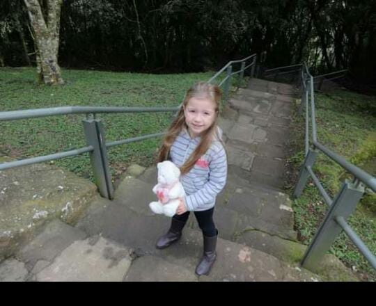
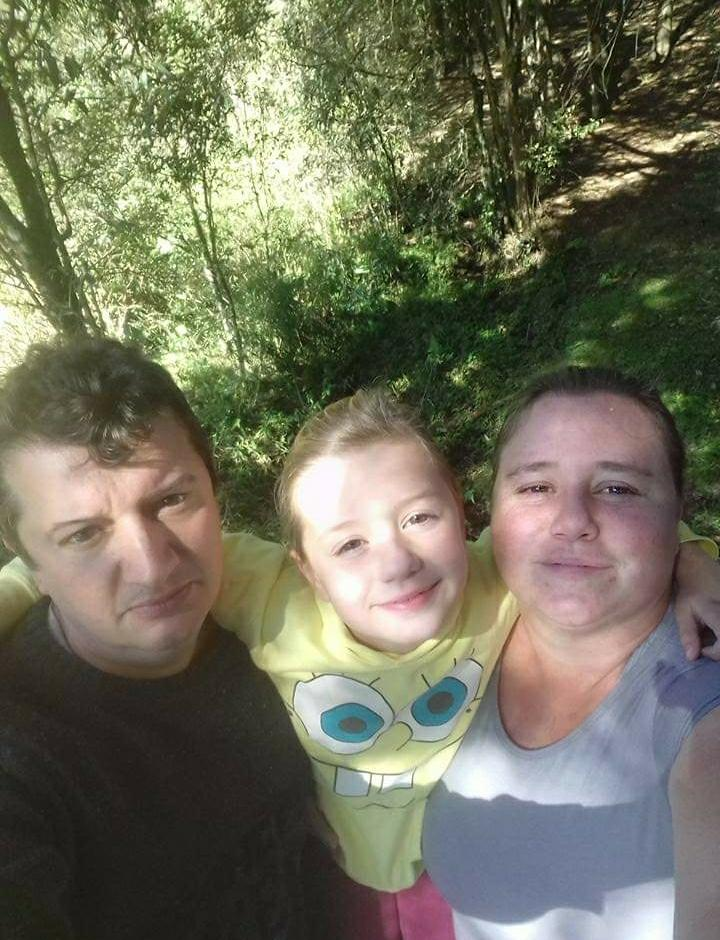

Minhas Lembranças

Meu Judô
Essa é uma sessão de fotos antiguinhas de quando eu ainda fazia as competições de judô.
Apesar de todas as vezes que lutei, apenas uma vitória de primeiro lugar eu consegui. Foram ao total 11 lutas, na maioria das vezes segundo lugares.

Lembranças De Parque
Fotos de quando fomos num parque, mas ele era extenso demais e acabei cansando

Familia
Fotos em família em diversos locais, com o Pai e a Mãe. Na escola, em parques e etc.